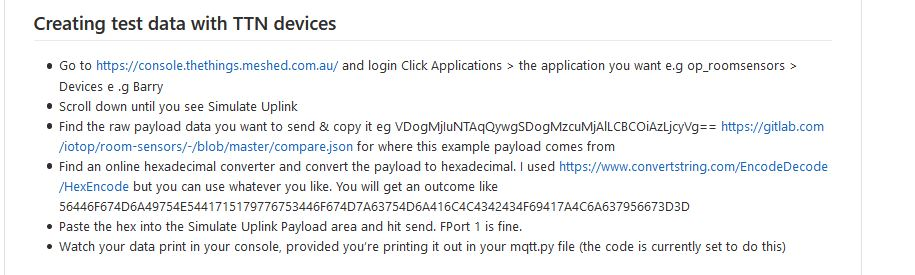
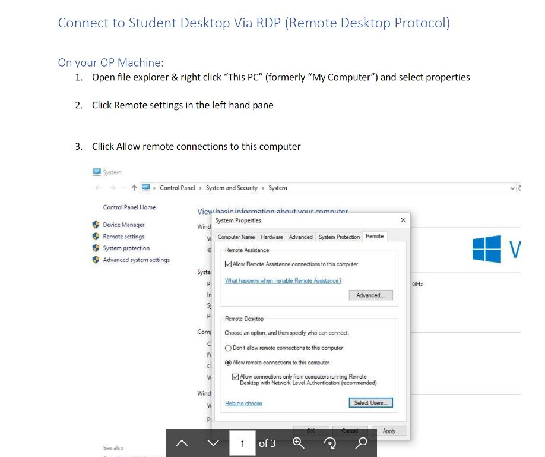

Sprint Two
The middle of Sprint two marked the beginning of a nationwide lockdown as Covid-19 hit our shores. As we were given a few days notice before the lockdown began I made it a priority to set up remote access for myself and my team mates, and made a simple instructional document in addition to adding steps to documentation. I considered this to be a helpful professional contribution as not everyone was familiar with RDP and SSH tunnelling.
To say that lockdown hindered my progress is an understatement, in addition to the disruption of routine arose a myriad of technical challenges to get an app I was only semi-familiar with working from home and/or remotely. Setbacks included migration errors that was solved by a team member by switching from sql to sqlite3, learning how to simulate payloads and having my C drive on my Polytech machine die. As it stands I am using one of our sysadmins test machines to access network features. The timing of our sprints were also affected as the holidays were brought forward, bringing our sprint to a halt. In retrospect continuing the sprint probably would have been a better approach, keeping motivated & working with other motivated individuals can make a huge difference in work output.
I became very stuck on the sensors web app project in my attempt to get the time a payload was sent so a user could determine the accuracy of the sensor readings. There's not a lot of excuses for my lack of progress during this sprint other than I was still learning the flow of the application; Django, TTN and mqqt were all new languages and platforms to me. I also struggled at first when I came to transition from using relational databases to using Mongo DB which is document oriented.
Towards the end of the second sprint I became aware that GitLab does not allow Developer users to create new repositories & branches. As this is the first Group Project I have ever administrated on Gitlab I was unsure what developers could and couldn’t do. In addition to doing some searching I also asked one of my team mates to do some tests with me as she too had a developer account. We decided the best thing to do was to make everybody a owner and have asked that users only delete from projects they have created.
Though the situation of working from home for a minimum of one month is daunting, it's also an opportunity to acquire new skills. For example I am picking up little tricks that make my life easier like adding programs to right click menus so I didn't have to cd into my development directory every time I opened my virtual environment, or how to simulate data payloads from TTN which I have added documentation for. I plan on documenting skills I have picked up as result of studying in lockdown throughout the upcoming sprints.
Click here to view the entire PDF I created to help my team mates connect to their OP machines.

